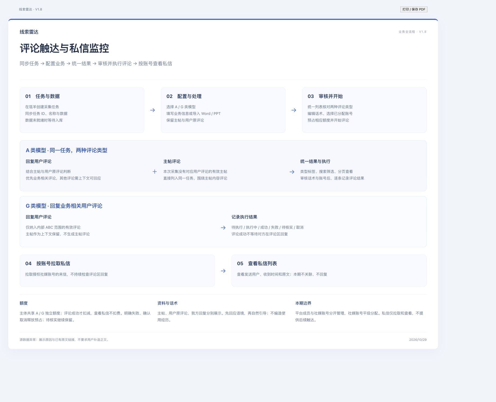
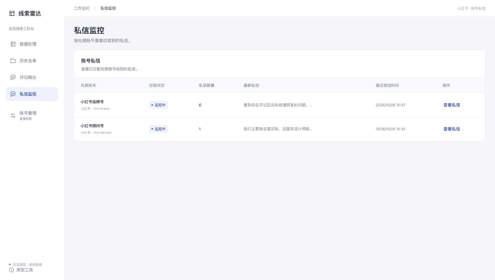
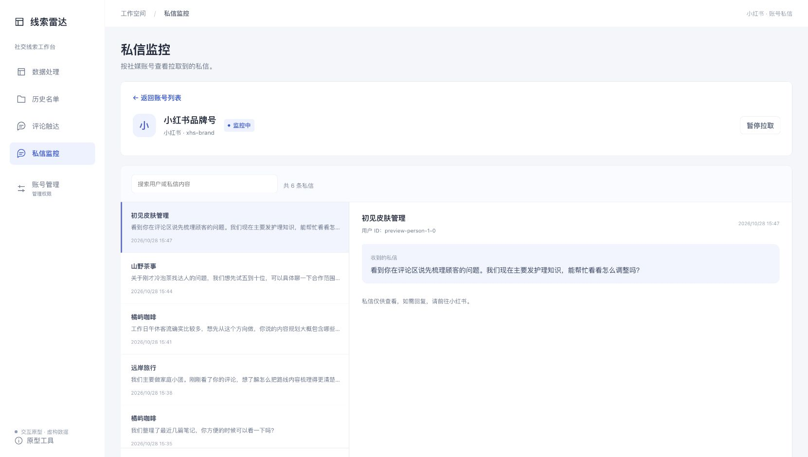
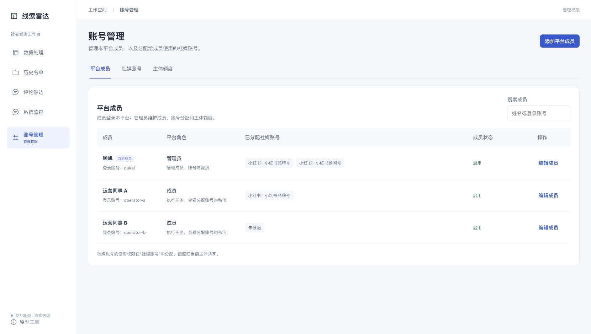
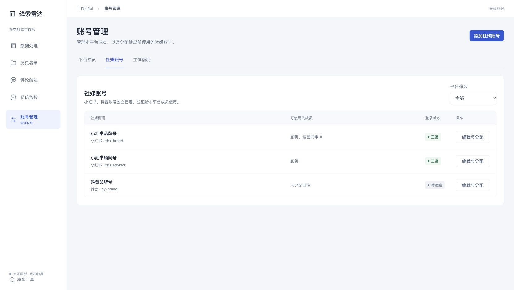

当前版本：V1.8；更新日期：2026/10/29；更新人：顾凯。
总览原型：https://sokripper.github.io/lead-radar-medical-aesthetics/
从零体验：https://sokripper.github.io/lead-radar-medical-aesthetics/?trial=1&restart=1
两版采用相同业务逻辑；总览版展示多种状态，从零体验版从待配置任务开始，体验数据相互隔离。
原型用于确认交互，真实数据接入、评论执行、私信接入和调度仍需联调。V1.8 总览版与从零体验版同步发布，包含只读私信列表与平台成员／社媒账号分层管理。
| 版本号 | 需求概述 | 更新人 | 日期 |
| V1.1 | 新增 A/B 独立额度与 Word/PPT 业务资料导入；调整任务同步、查重及分流规则。实时同步和同一用户多内容跨账号触达规则后续评估。 | 顾凯 | 2026/10/26 |
| V1.2 | 新增 A/G 类筛选模型，额度按模型独立统计；A/B/C/D 保留为线索意向等级；完善任务自动同步、Word/PPT 业务资料导入、账号分流去重及相关页面交互。 | 顾凯 | 2026/10/26 |
| V1.3 | 整体统一任务自动同步、A/G 模型、意向分级、账号分流、额度、话术与异常处理口径；重构业务流程、页面规则和验收标准。 | 顾凯 | 2026/10/27 |
| V1.4 | 全量统一任务式流程与历史名单，优化分页话术审核、源数据异常展示和暂停编辑；更新业务流程图、原型截图及验收要求。 | 顾凯 | 2026/10/27 |
| V1.5 | 首轮触达调整为主帖下评论回复，保留主帖与原评论；新增按账号私信监控及原评论关联，完善任务状态、暂停编辑、A/G 额度与高保真展示；全量更新正文、流程图、截图和验收标准。 | 顾凯 | 2026/10/28 |
| V1.6 | 客户侧统一展示 A/G 模型；调整 A 模型分阶段评论与主帖评论、G 模型评论范围及上下文话术；同步状态、额度释放和流程图，跨任务去重暂缓。 | 顾凯 | 2026/10/29 |
| V1.7 | 合并模型结果与关联主帖，统一评论类型标签、筛选和分页；无对应用户评论的主帖纳入同一 A 类评论任务；同步两版原型、流程图与相关功能说明。 | 顾凯 | 2026/10/29 |
| V1.8 | 私信调整为按账号拉取与只读列表，取消来源关联、回复及跟进状态；拆分平台成员、平级社媒账号与主体额度，明确成员权限和账号分配。 | 顾凯 | 2026/10/29 |
| 一级菜单 | 二级菜单 | 具体功能点 | 操作 | 具体描述 |
| 数据处理 | 采集任务列表 | 任务自动同步与查看 | 同步、进入任务 | 按任务 Key 建档；显示任务名称、模型、数据状态；详见 4.1。 |
| 数据处理 | 任务工作区 | 模型与业务规则 | 配置、保存、发起解析 | 选择 A/G 模型，填写业务信息；解析后锁定；详见 4.2。 |
| 数据处理 | 业务规则 | Word/PPT 资料导入 | 上传、核对、确认 | 提取候选业务信息，经确认后写入表单；详见 4.3。 |
| 数据处理 | 模型结果 | 模型执行范围 | 查看结果 | 客户仅见 A/G；ABCD 为内部判断，按模型确定评论范围；详见 4.4。 |
| 数据处理 | 任务结果 | 名单查看与导出 | 搜索、筛选、详情、导出 | 统一展示评论类型、主帖及原评论摘要；支持筛选、分页与导出；详见 4.5。 |
| 数据处理 | 来源详情 | 主帖与原评论 | 查看上下文、打开原帖 | 保留主帖，即使主帖作者无意向；原评论不被我方回复替代；详见 4.6。 |
| 数据处理 | 数据异常 | 来源异常展示 | 查看原因、打开原文 | 缺正文或关键上下文时仅展示异常，不要求用户修复；详见 4.7。 |
| 历史名单 | 历史任务列表 | 按任务回看名单 | 查看名单、继续构建 | 保留规则快照与触达记录，不混排全部用户；详见 4.8。 |
| 评论触达 | 创建任务 | 确认触达范围 | 确认整批、排除个别 | 默认纳入该任务模型允许的完整可用范围；详见 4.9。 |
| 评论触达 | 话术与账号 | 话术审核与编辑 | 生成、编辑、翻页、选账号 | 展示主帖、用户原评论及我方回复，保留人工修改；详见 4.10。 |
| 评论触达 | 任务详情 | 保存与开始评论 | 保存、开始 | 保存为待执行，校验通过后单独开始评论；详见 4.11。 |
| 评论触达 | 任务列表与详情 | 执行与结果查看 | 查看进度、查看结果 | 同一任务执行回复用户评论和主帖评论，按条记录状态；详见 4.12。 |
| 评论触达 | 任务详情 | 暂停编辑与恢复 | 暂停、编辑、恢复 | 执行中只读；暂停后仅编辑名称和待执行话术；详见 4.13。 |
| 评论触达 | 任务分派 | 账号分流与防重复 | 程序分派、占用校验 | 保留同用户多内容，本任务内防重复；跨任务策略待定；详见 4.14。 |
| 私信监控 | 账号列表 | 按账号拉取私信 | 查看私信、暂停／恢复拉取 | 展示授权账号收到的私信及拉取状态，不检查评论区回复；详见 4.15。 |
| 私信监控 | 账号私信详情 | 只读私信列表 | 搜索、翻页、查看全文 | 展示发送用户、收到时间和内容，无关联、回复、触达及跟进状态；详见 4.16。 |
| 账号管理 | 平台成员 | 成员身份与权限 | 添加、编辑、启停 | 维护本平台登录身份、管理员／成员角色；详见 4.17。 |
| 账号管理 | 社媒账号 | 社媒账号维护与分配 | 添加、编辑、分配 | 小红书／抖音账号平级管理，分配给平台成员，不设置主子关系；详见 4.18。 |
| 账号管理 | 主体额度 | A/G 模型额度 | 查看、登记、记录用量 | 同主体共享两个独立额度池，仅评论发送计量；详见 4.19。 |

瓴羊创建采集任务 → 同步任务与数据 → 配置 A/G 模型和业务信息 → 统一结果列表 → 确认评论范围 → 审核话术及账号 → 保存并开始评论 → 按账号拉取私信 → 查看私信列表与原文。A 模型的同一评论任务包含可回应的用户评论，以及本任务中没有对应用户评论、正文与定位信息有效的主帖；G 模型仅纳入内部 ABC 范围的可用用户评论。
评论执行与私信收件列表分别管理；评论成功不等待对方回复。本期私信功能到查看来信为止，不提供来源关联、人工回复或后续触达动作。原型主流程采用独立页面，补充详情可用抽屉，返回时保留任务、筛选位置及已保存编辑。
入口与操作：数据处理 → 采集任务列表；点击名称或进入任务。
运营在瓴羊创建采集任务，瓴羊将数据写入共享库。本平台读取任务 Key 和中文名称，自动创建或更新对应任务。任务 Key 是关联依据，名称用于识别，不作为唯一键；重复同步不生成重复任务或重复数据。
共享库有延迟时，展示当前已知状态，不承诺创建任务后即时可用。若只拿到了数据行中的任务 Key、尚无可靠名称或完成信号，不能伪造任务名称和“数据已完整”状态；由接口联调确认字段和映射。实时增强另行评估，不阻断本期批次处理。
任务列表展示中文名称、任务 Key、平台、A/G 模型、业务规则摘要、创建时间及状态。名称和“进入任务”均可进入工作区。任务 Key 和外部名称由来源同步，业务人员不改写。
| 状态 | 状态含义 | 允许操作与限制 | 下一状态 |
| 待配置 | 尚未完成模型或必填业务信息 | 可进入任务并配置；不能开始解析 | 配置完整后按数据情况进入等待数据或可解析 |
| 等待数据 | 规则已配置，但数据尚未满足处理条件 | 可查看状态和修改规则；不能提前解析 | 数据就绪后进入可解析 |
| 可解析 | 数据与规则均满足条件 | 可核对和修改规则，点击开始解析 | 解析中 |
| 解析中 | 本任务正在分析 | 可查看进度；模型及规则只读 | 成功后解析完成；失败保留已完成范围及原因 |
| 解析完成 | 结果与规则快照已保存 | 查看结果、异常和快照；构建触达任务；不开放原筛选规则编辑 | 保留该状态，另建关联评论任务 |
任务工作区固定保留“任务概览、模型结果、数据异常、规则快照”，主帖资料并入模型结果的摘要与详情，不再设置单独“关联主帖”标签页。未完成的任务也能点击进入，不允许只显示无法操作的列表状态。规则编辑范围保持上述约定；触达任务暂停可编辑不意味着重新开放已解析任务的模型和筛选规则。
本期不提供 Excel 导入或手工重复登记任务 ID。任务名称来源、完成信号、增量更新与延迟需与瓴羊联调确认，实时采集增强后续评估。
入口与操作：采集任务 → 模型与业务规则；保存后按条件发起解析。
| 字段 | 要求 | 用途 |
| 业务行业 | 必填 | 明确本次业务背景 |
| 产品或服务 | 必填 | 限定可提供的能力、内容与话术事实 |
| 目标客户 | 必填 | 描述可接受的客户主体和对象 |
| 客户需求 | 必填 | 描述希望识别的需求及可承接的间接需求 |
| 地区范围 | 选填，默认全国 | 限定业务服务范围 |
| 补充排除对象 | 选填 | 增加本业务不接受的对象 |
| Word/PPT 资料 | 可选 | 辅助提取上述信息 |
系统结合行业相关性、身份匹配度、需求明确度和行动信号四个维度进行综合判断。意向等级、判断逻辑和通用例子由系统内置。用户不必填写 A/B/C/D 定义、正反例或技术提示词，不依赖获取瓴羊配置的正反向关键词。判断须结合当前业务信息与实际内容，不以某个关键词命中直接确定意向。
模型选择 A 类或 G 类；开始解析后模型与规则锁定并保留快照。任务暂停编辑只适用于评论任务，不解锁原筛选规则。
入口与操作：业务规则表单 → 导入业务资料。
本期支持 Word（doc/docx）和 PPT（ppt/pptx）业务资料。选择资料后提取产品服务、目标客户及业务需求等候选信息，用户核对后才写入当前任务表单。提取不覆盖用户已有填写，冲突项由用户选择或编辑。
保留文件名、提取结果和最终确认信息。解析失败时保留原填写，允许重新选择文件或手动补充；文件大小、页数上限和旧格式兼容范围须在开发联调时明确并在选择文件前显示，不默默截断。PPT 图片及复杂版式的理解效果应通过客户实际资料验收。
| 状态 | 状态含义 | 允许操作与限制 | 下一状态 |
| 待选择 | 尚未提供资料 | 可直接手填或选择 Word/PPT | 提取中 |
| 提取中 | 正在读取所选资料 | 保留原表单，不提前覆盖 | 待确认或提取失败 |
| 待确认 | 候选业务信息已生成 | 核对、修改候选；取消则保留原表单 | 确认后写入当前表单 |
| 提取失败 | 未取得可用候选 | 显示原因；重新选择文件或手动填写 | 重新提取或返回表单 |
入口与操作：任务工作区 → 配置 A/G 模型 → 模型结果。
客户页面只展示 A 类模型、G 类模型及相应额度。ABCD 是后台执行标准，不在客户名单、搜索筛选、话术审核、详情、导出或历史分布中显示，也不开放客户手改等级。A 类模型与内部 A 级不是同一概念。
| 内部等级 | 判断口径 | 执行方式 |
| A 高意向 | 明确问合作、收费、联系方法或近期对接需求 | A/G 均可纳入，结合主帖和原评论回应 |
| B 有需求 | 有可承接需求，正在比较或寻找方案、资源 | A/G 均可纳入，回应当前需求 |
| C 弱意向 | 业务相关但时点、主体或强度不明确；间接需求可保留 | A/G 均可纳入，不夸大用户意愿 |
| D 无明确业务意向 | 未识别明确业务需求，但不等于源数据异常 | 仅 A 模型考虑；必须有可理解、可回应的上下文，否则跳过 |
内部判断结合行业相关性、身份匹配度、需求明确度和行动信号，不按关键词命中或昵称机械分类。原评论与关联主帖共同判断；来源缺正文、必要父评论缺失等单独标异常，不归 D 凑发送量。
| 模型 | 回复用户评论 | 主帖评论 |
| A 类模型 | 内部 ABC 优先，D 需有可理解、可回应的上下文；无法判断的不纳入 | 本任务采集到主帖但没有对应用户评论，且正文及定位有效时纳入；与用户评论保存在同一评论任务中 |
| G 类模型 | 只回复内部 ABC 范围的可用评论 | 不纳入主帖评论 |
业务排除、权限、账号与必要定位校验对两种模型均有效。客户看到可触达/未纳入结果与具体原因，不看到内部 ABCD 标签。已解析规则保持快照，后续不在话术页更换模型。
入口与操作：任务工作区 → 模型结果 → 详情／导出／下一步。

模型结果与关联主帖合并为一个列表，不重复展示两套数据入口。每行展示评论对象、评论类型、主帖标题、内容摘要、纳入状态、地区和详情。类型分为“回复用户评论”“主帖评论”：前者展示评论用户、用户原评论和主帖摘要；后者展示发帖人及主帖正文摘要，不伪造评论用户。完整正文与定位信息放入详情。地区缺失显示未知，不凭昵称推断。
支持全部类型／回复用户评论／主帖评论筛选，以及可触达／全部记录和用户、主帖、内容搜索。以上条件仅用于查看。页面底部明确显示本任务可进入新触达任务的数量，主操作为“下一步：构建触达任务”。筛选条件不暗中改变整批触达范围；真正排除对象在范围确认步骤完成。
导出须显示当前任务、实际筛选范围与数量，导出范围包含匹配条件下全部分页，不限当前页。不存在勾选操作的页面不再提供含糊的“已选用户”导出选项。权限和脱敏要求沿用主体授权。
列表默认每页 10 条，可切换 20／50 条，支持上一页、下一页及页码跳转，并展示匹配总数与当前页／总页。搜索、类型、状态或每页条数变化后回到第一页；页码不得超过当前结果范围，空结果显示空状态。翻页保持当前条件。摘要限制行数、详情展示全文；地区与操作列保持可读宽度。
入口与操作：结果详情、话术审核和评论任务详情。
主帖既是筛选语境，也是定位评论的资料，必须独立于意向名单保留。即使主帖作者属于同行、广告或无意向，也不能因为作者不触达而丢掉主帖及其关联评论。主帖作者与目标评论用户是两个不同身份。
| 资料 | 必须保留的内容 | 用途 |
| 采集任务 | 任务 Key、中文名称、平台、同步状态 | 划定业务规则和数据归属 |
| 主帖 | 主帖 ID、发帖人 ID/名称、标题与已取得的正文、已有原帖链接及主页资料 | 为筛选提供语境，支持定位原帖 |
| 用户原评论 | 评论 ID、评论用户 ID/名称、评论正文、所属主帖 ID；有父评论时保留其关联 | 确认在回复谁、回复哪条评论 |
| 评论任务快照 | 来源任务、执行账号、目标主帖、用户原评论、我方回复、模型和规则版本 | 保证审核与执行一致，保留追溯依据 |
| 私信 | 独立消息标识、接收社媒账号、发送用户 ID／名称、原始内容、收到时间 | 按接收账号归集与只读查看；不包含来源关联和回复状态 |
主帖资料和用户原评论分别保留。回复评论必须具备主帖、发帖人、评论及评论用户的定位信息；A 模型主帖评论只要求有效主帖及发帖人信息，不虚构评论用户或评论 ID。两种动作均需可用正文和唯一定位，资料不足则说明原因并阻止该动作。
已保存任务使用来源快照，不因为后来筛选、改等级、同步更新而覆盖原评论或已发送正文。相同主帖可关联多位评论用户；筛选人数、评论条数、保留主帖数分别统计，不混称去重用户数。
入口与操作：任务工作区 → 数据异常。

| 异常类型 | 展示内容 | 本平台处理 |
| 上下文缺失 | 已取得的评论、缺失的原帖/父评论等必要关联，以及无法判断的原因 | 标记数据异常，排除本次触达；有原文链接时可打开 |
| 正文获取失败 | 无可用正文或来源返回失败 | 标记数据异常，排除本次触达；提供已有原文链接 |
| 未提供原文链接 | 明确显示“未提供原文链接” | 不拼造链接，不用用户主页代替原文 |
上述属于来源数据问题，只展示异常事实与可访问原文，不提供用户补写上下文、保存修复、人工编造原文或重跑采集的操作。真实小红书原文链接可在新标签打开；平台登录、失效等访问限制由原站决定。
源数据异常数量与正常结果分开统计，不阻断正常名单流转。不能通过人工调高意向等级将源数据异常放入触达名单。A 类模型也遵守该边界。
本平台自身的分析超时、模型调用失败、保存失败与源数据异常区分记录：保留已完成结果，由系统记录失败范围和重试状态，不误标为瓴羊采集失败。本次原型不演示用户修复源数据的流程。
入口与操作：历史名单 → 历史任务列表 → 查看名单。

历史名单首页是已处理任务列表，展示任务名称、模型、数据量、有效记录数量和关联触达任务数。点击“查看名单”进入该任务详情，再查看正常结果和异常，不混排所有任务的用户。
历史任务可继续构建触达任务，但只纳入当前仍满足条件、未在该采集任务的评论批次中成功触达或占用的对象；已加入触达的记录跳转原任务处理，不重新创建重复发送。原结果、规则快照和历史执行记录均保留。
入口与操作：任务结果或历史任务 → 下一步：构建触达任务。

从一个筛选任务出发，默认纳入该模型下符合条件的完整范围，分别展示“回复用户评论”“主帖评论”的条数，以及异常与未纳入数量。A 模型中没有对应用户评论的有效主帖直接列入主帖评论范围，不另建任务，不等待评论结果再决定是否补发；G 模型不纳入主帖评论。数量按操作条数统计，不称去重人数。列表分页和筛选不会缩减默认任务范围。
“查看名单 / 排除个别记录”是可选操作，用于业务例外，不作为逐个选人的必经步骤。未纳入对象保留原因。无可用对象时不能继续；已有任务提供“查看已建触达任务”，避免只留下不可点击的按钮。
入口与操作：确认范围 → 话术与账号；编辑后保存评论任务。

主页面顶部简要展示来源任务、模型、名单数量、执行账号与对应额度。下方为左侧名单与摘要、右侧单人上下文及正文编辑区。默认每页 10 条，支持 20/50 条、上一页/下一页及跳页；支持搜索用户、需求和话术，并按话术/执行状态筛选。
点击某位用户是查看和编辑该人的话术，不是重新选择触达对象。翻页、搜索和切换状态不会清空修改，也不会把其他页用户排除出任务。明确显示“当前匹配数量 / 本任务总量”。大量名单不要求一次性渲染所有正文，不要求逐条展开才能完成审核。
“更新未编辑话术”仅更新未人工编辑的内容。人工编辑内容保留；单条采用建议或覆盖内容应明确作用范围。草稿自动保存，关闭或返回后可继续；生成或保存失败时提示影响记录，不显示虚假的成功。
上下文以一个卡片表达两层关系：上层“主帖”展示标题、正文与发帖人；下层“用户原评论”展示评论用户和原文。卡片之外单独放“我方评论回复”的编辑框，三者不能互相替代。原评论在话术审核与评论任务详情保持一致。主帖评论记录只展示主帖、发帖人和我方评论编辑框，明确其评论类型，不出现空的“用户原评论”占位。
主帖/用户原评论保持只读，技术定位字段收进“定位信息”折叠区；有真实原帖链接才显示“查看原帖”。长内容由详情区独立滚动，不把用户原评论裁掉，也不因卡片高度限制只剩主帖。
A/B/C 结合实际评论、关联主帖及已取得的父评论，以自然交流的方式先回应问题，再作必要的需求澄清和轻量业务引导。避免统一广告开头、长篇推销、强行索要联系方式及与原问题无关的服务介绍。
A 模型中的 D 评论同样需要读懂主帖与评论，生成与讨论相关的回复。无法判断所指内容时跳过，不再发送随机产品广告。主帖评论围绕主帖主题生成，编辑区标明“主帖评论内容”，不显示虚构的用户原评论。
例如，对“有流量但没转化”先区分“没人咨询”还是“咨询后没继续聊”；对“代运营怎么收费”先澄清所需服务范围。软推广可先认同对方的合理观点，再自然提及已确认服务或案例；第三方视角不等于编造消费者身份，未经证实不能写“我们用过”“合作效果很好”等经历。以上为表达方向，不是所有用户共用的固定话术。
用户评论与主帖评论两种话术都允许开始前或暂停后编辑，发送后保留快照。产品事实、目标对象或新回复发生变化时提示重新核对。原型使用演示文案；实际生成质量需用客户确认的业务材料和真实样本评估，不承诺未经验证的准确率。
账号下拉框只展示当前操作人已分配、平台匹配且可用的账号。上下文卡片与编辑区独立滚动，用户原评论始终完整可查看；下拉框高度、内边距和箭头统一。
入口与操作：话术与账号 → 保存并进入触达任务 → 开始评论。
“保存并进入触达任务”校验评论范围、非空正文、身份、账号与模型额度，原子占用对象并预占额度，创建待执行任务后进入详情。按钮不再把用户循环送回“生成沟通内容”。重复点击只形成一个任务和一次有效预占。
保存后可继续编辑尚未开始的任务话术；点击“开始评论”才安排执行。执行前再次检查条件，不发送空白正文、未确认业务内容或已被当前任务处理的同一评论对象。
| 检查项 | 不满足时的处理 |
| 名单与定位资料 | 无可用对象或必要身份/主帖/评论资料缺失时，提示具体原因并阻止受影响记录提交 |
| 话术 | 存在空白或未确认业务内容时不能开始；保留已编辑内容 |
| 账号及权限 | 账号失效、未授权或平台不匹配时不能执行 |
| 额度及占用 | 余额不足或被其他任务占用时阻止相应提交；不得重复预占 |
| 保存失败 | 显示失败并保留草稿；不显示已建任务或已发送成功 |
入口与操作：评论触达 → 任务列表 → 任务详情。


“评论触达”首页是任务列表，展示任务名称、来源筛选任务、A/G 模型、评论操作数量、执行账号及状态。进入任务后展示统计、分页名单、话术、逐条评论执行结果；私信另到“私信监控”查看。相同采集任务可分多个评论批次，但同一评论操作不得重复加入。跨采集任务的历史防重策略暂不扩展。
本期认可的执行路径为：根据主帖发帖人标识访问其主页 → 结合标题、正文关键词定位主帖 → 回复用户评论时匹配目标用户与原评论后回复；主帖评论则在确认主帖后直接发布与主题相关的评论。该路径属于执行端内部实现，业务用户只需核对来源内容、账号与回复，不在页面填写定位步骤。
匹配必须同时核对主帖和评论用户/评论内容；关键词只用于寻找候选，不是唯一身份凭据。主页访问成功不等于找到主帖，找到主帖也不等于找到目标评论。多条相似内容或无法唯一定位时停止该条并记录原因，不在另一篇帖子、另一位用户下发送。
同一 A 模型任务的名单中明确标记“回复用户评论”和“主帖评论”，共用话术审核、账号选择、执行与状态列表。存在对应用户评论的主帖作为上下文保留，不额外生成主帖评论动作；没有对应用户评论的有效主帖直接列为主帖评论。这里的“没有评论”指本次采集数据未关联到用户评论，不宣称原站评论区为空。本期不加入主帖覆盖判断、按评论成功结果补发或自动跳过机制。主帖评论成功仅代表该条评论动作成功，不冒充已回复某位评论用户。
真正发送前再校验任务未暂停、账号可用、额度有效、目标未重复占用。明确未发送的定位失败不计成功；动作已发出但缺回执进入“结果待核实”，禁止换号或重试造成重复评论。评论任务结果只描述我方评论动作，不等待目标用户在评论区回复。
| 状态 | 状态含义 | 允许操作与限制 | 下一状态 |
| 待执行 | 已保存，动作尚未发出 | 允许编辑的任务状态下可改正文；确认未执行后可取消 | 执行中或已取消 |
| 执行中 | 动作已发出，等待回执 | 只读，不取消、不改正文 | 发送成功、发送失败或结果待核实 |
| 发送成功 | 取得明确成功依据 | 查看正文及结果；不等同已读或回复，不重复发送 | 保留成功记录 |
| 发送失败 | 取得明确失败依据 | 保留原因；修复并确认后从原记录重试 | 重试后执行中 |
| 结果待核实 | 回执缺失或矛盾 | 保留预占；禁止直接重发 | 核实后成功或失败 |
| 已取消 | 确认未执行且已停止 | 只读保留记录 | 终态 |
任务汇总优先显示有待核实项，其次在有剩余记录时显示账号异常/暂停，再按执行中、待执行、全部完成、部分完成、取消或结束展示。单条变化同步刷新统计。
| 任务状态／样式 | 状态含义 | 允许操作与限制 | 下一状态 |
| 待执行／灰 | 任务已保存未开始 | 核对并开始评论，可编辑未执行内容 | 执行中或取消 |
| 执行中／蓝 | 正在分派及执行评论 | 查看进度；先暂停再编辑 | 暂停、完成、部分完成、异常或待核实 |
| 已暂停／橙 | 停止分派新动作 | 编辑名称及待执行话术；在途动作继续归集 | 校验通过后执行中 |
| 已完成／绿 | 本任务所有评论动作均已成功 | 只读查看；私信拉取与查看独立进行 | 保留完成记录 |
| 部分完成／橙 | 包含成功与失败/取消 | 逐条查看原因，符合条件的失败项从原记录重试 | 按重试结果重新汇总 |
| 有待核实项／紫 | 至少一条发送结果不确定 | 先核实，不能重复发出 | 核实后按记录重新汇总 |
| 异常暂停／红 | 账号或执行条件异常 | 修复原因，重新校验后再恢复 | 执行中或继续暂停 |
| 已取消／已结束／灰 | 任务停止，保留实际执行结果 | 只读查看，不记为全部成功 | 终态 |
单条失败使用红色，待核实使用紫色，待执行/取消使用灰色，成功使用绿色。不能只靠颜色识别，必须保留状态文字。结果模拟入口只在“原型工具”启用后出现，正式产品由执行端回执驱动。
入口与操作：执行中任务 → 暂停；暂停任务 → 编辑 → 恢复。

| 任务/记录状态 | 编辑规则 | 执行规则 |
| 尚未开始 | 可编辑任务名称、待执行话术 | 核对后点击开始评论 |
| 任务执行中 | 任务名称及待执行话术都只读 | 必须先暂停再修改，不允许边发边改 |
| 任务已暂停 | 可编辑名称和待执行话术，自动保存 | 停止分派新的发送；已发出的动作继续归集结果 |
| 单条正在发送 | 即使任务暂停，该条正文也不可改 | 等待实际结果，不回滚成待执行 |
| 单条成功、失败、待核实或取消 | 保留本次执行的正文快照 | 根据实际状态处理，不覆盖历史正文 |
| 恢复任务 | 重新锁定编辑 | 校验账号、正文、额度和联系限制，仅继续剩余待执行项 |
暂停不会释放仍需保留的任务占用和额度，不新建任务、不重发成功记录。存在空白话术、账号不可用等阻断时，不能恢复。模型、来源任务和规则快照不因暂停而改变。当前原型支持编辑任务名称及待执行话术；执行账号保持原任务关联，不把“可编辑”解释为随意换号。
入口与操作：创建评论任务及发送前由程序检查，不要求运营手工拆名单。
分流由程序负责，使用当前客户主体内获授权且正常的账号。同一用户的不同评论和主帖均保留；不能仅按用户 ID 删除内容。任务内相同评论按平台、主帖 ID、评论 ID 判断重复，具体动作保留执行账号、目标、请求标识和结果。
本期保留当前任务内的重复提交防护、并发占用及失败重试幂等。收到确定成功回执后不重复发送；结果待核实时不能直接重发。主帖评论以本次采集记录是否存在对应用户评论区分，不再增加主帖历史覆盖判断。
跨采集任务、跨业务、历史主帖的统一去重暂不扩展，也不写成已确认的全局限制。按时间采集并不能证明数据绝不重复；这一点保留待定，后续单独明确业务及账号池边界，不阻断本次调整。
同一用户多内容如何分配到多个账号、账号不足如何排队的细则仍待确认，不新增“用户线索”模块。原型继续采用一个评论批次绑定一个已分配账号，展现归属及本任务防重复；不将其描述为生产多账号自动分流已实现。账号异常暂停，不悄悄换号。
入口与操作：私信监控 → 账号列表 → 查看私信。

本期仅提供私信监控与只读列表：拉取本主体内已授权小红书账号收到的私信，按接收账号归集。首页展示社媒账号名称及标识、拉取状态、私信数量、最新私信摘要、最近收信时间和“查看私信”。不展示待关联数、待跟进数、回复成功数等业务处理指标。
私信接收范围不以是否能关联评论任务为前提，来自评论触达或自然咨询的来信都保留。评论任务的执行、暂停或完成，与账号收信分别管理；不持续监控评论区回复，不因用户发来私信自动生成触达任务。
| 账号拉取状态 | 含义 | 允许操作与限制 |
| 监控中 | 当前账号启用私信拉取 | 查看私信、暂停拉取 |
| 已暂停 | 已停止该账号的新消息拉取 | 保留历史私信；账号及权限正常时可恢复 |
| 账号异常 | 登录失效、受限或连接不满足拉取条件 | 保留已拉取消息；运维恢复并校验后再恢复拉取 |
上述仅是账号的拉取状态，不是单条私信的业务状态。暂停拉取不删除历史消息，也不停止评论任务。账号选择范围由成员分配决定，生产环境须在服务端检查主体和成员权限。
真实消息来源、历史拉取范围、频率、延迟及断线补拉需与执行端联调；原型展示的监控开关和虚构消息不代表真实接入已完成。抖音本期只维护账号，不纳入本期小红书私信接入。
入口与操作：账号列表 → 查看私信 → 搜索／翻页／选择消息。

进入账号后，顶部展示当前社媒账号与拉取状态；左侧为其收到的消息，右侧展示当前消息全文。列表按收到时间倒序，显示发送用户、内容摘要和收到时间；详情展示发送用户名称、已有用户 ID、收到时间与原始私信。每条消息独立保留，不用新消息覆盖旧消息。
支持按发送用户名称或私信内容搜索。默认每页 10 条，提供上一页、下一页、当前页／总页及匹配数量。搜索后回到第一页；切换账号清空原搜索与选中项；翻页后详情显示当前页选中的消息或首条消息。长内容在列表中用摘要，在详情中可完整查看。
| 页面情况 | 展示规则 |
| 没有已分配社媒账号 | 显示暂无分配账号，不展示其他成员账号的私信 |
| 账号尚无私信 | 显示“这个账号还没有收到私信”，不生成假消息 |
| 搜索无匹配 | 显示“没有符合条件的私信”，保留搜索条件供修改 |
| 已有消息 | 显示列表和只读详情，点击切换当前消息 |
| 账号暂停／异常 | 已取得的历史消息仍可查看；不把旧列表误示为持续更新 |
本期不做原评论匹配、来源确认、话术生成、私信回复、下一步触达、跟进标记或消息状态筛选。取消“待关联、待处理、已完成、发送失败、结果待核实”等私信处理状态。页面可提示“私信仅供查看，如需回复，请前往小红书”，不提供本平台发送按钮或回复输入框。
消息存储以接收账号和平台消息标识识别同一消息，重复拉取不重复展示或计数；这是收件数据一致性要求，不扩展评论任务的跨任务去重规则。原型中的“模拟收到私信”只在原型工具启用后显示，不进入正式业务操作。
入口与操作：账号管理（管理权限）→ 平台成员。

账号管理保留同一一级导航，内部拆分为“平台成员、社媒账号、主体额度”三个标签。平台成员是登录本平台的人；社媒账号是执行评论与接收私信的小红书／抖音身份，两者分别维护。客户主体承载数据与额度，不作为一个小红书主账号。
| 对象 | 管理内容 | 与其他对象的关系 |
| 客户主体 | 业务数据、任务、成员、社媒账号及 A/G 额度 | 同主体内共享额度；不同主体隔离 |
| 平台成员 | 登录账号、姓名、管理员／成员角色、启停状态 | 可获分配多个社媒账号 |
| 社媒账号 | 平台、名称、社媒标识、登录状态、可使用成员 | 全部平级；可分配给一个或多个启用成员 |
成员列表展示姓名、平台登录账号、平台角色、已分配社媒账号、启停状态及编辑入口；支持按姓名或登录账号搜索。添加／编辑表单包含成员姓名、平台登录账号、角色及状态。姓名和登录账号必填；同主体的登录账号不能重复。成员身份使用稳定标识，修改展示姓名不丢失已有账号分配和历史记录。
| 平台角色 | 权限范围 |
| 管理员 | 管理本主体成员、社媒账号及分配、登记主体额度；执行任务时仍选择已分配且可用的社媒账号 |
| 成员 | 在授权业务范围内执行任务，使用分配给自己的社媒账号，查看对应账号私信；不开放账号管理功能 |
| 成员状态 | 规则 |
| 启用 | 可按角色和账号分配开展工作 |
| 停用 | 不允许继续登录或发起新操作；保留既有任务、分配和操作记录；分配表单不允许新增停用成员 |
当前登录管理员不能在此表单停用自己或取消自己的管理员角色。真实登录、停用、角色与数据权限必须服务端校验；原型仅保存成员配置，没有创建真实登录凭据，也不代表认证系统已完成。生产成员身份接入复用现有登录体系，凭据开通方式在接入时明确，不在社媒账号表单混填平台登录密码。
入口与操作：账号管理 → 社媒账号 → 添加社媒账号／编辑与分配。

小红书与抖音账号统一为平级社媒账号，不设置主账号、子账号、父账号或上下级归属。旧原型中的主子账号迁移为平级账号，保留原账号标识、任务关联和分配信息，不能因去除层级丢失历史记录。
列表显示账号名称、所属平台、社媒账号标识、可使用成员、登录状态和编辑操作，可按平台筛选。表单维护平台、账号名称、社媒标识、登录状态与成员分配；名称及社媒标识必填，同平台内的同一社媒标识不能重复登记。新增账号默认待运维；修改平台或标识需重新校验登录状态。
管理员通过复选框分配一个或多个启用成员。同一成员可以使用多个社媒账号，同一社媒账号也可以授权多个成员；这只是使用权限，不意味着形成社媒主子账号。多个成员共用账号时仍由程序分派执行任务，避免重复提交，不要求运营手工拆数据。
| 社媒登录状态 | 可执行范围 |
| 待运维 | 已登记但未完成登录校验；不能开始评论或拉取新私信 |
| 正常 | 在成员已授权、平台匹配等条件满足时可执行评论和拉取私信 |
| 已失效 | 登录会话不可用；停止新动作，运维恢复后重新校验 |
| 受限 | 当前账号无法正常执行；暂停新动作并保留原因，不自动换号 |
执行账号下拉框只展示当前成员已分配、平台匹配且正常的账号。私信列表只展示当前成员获授权的小红书账号；账号异常仍保留授权范围内已拉取消息。撤销分配后成员不能继续使用该账号或查看其私信，历史操作仍保留原执行账号与操作者。
登录、扫码和日常会话维护由运维完成。业务页面不展示云电脑配置，不要求用户在平台填写小红书密码。原型可演示登录状态切换，生产状态必须依据实际连接校验，不能人工选“正常”就视为已登录。抖音本期仅账号维护，不出现在小红书评论任务的账号选项中。
平台成员停用／角色调整、社媒账号维护／成员分配以及额度登记均记录操作者、时间、对象和变更结果，不记录密码或完整登录凭据。客户主体之间的数据与权限隔离，普通成员的导出、查看和操作均受服务端授权约束。正在执行动作按实际结果归集，撤销权限不抹去已发送记录。
入口与操作：账号管理 → 主体额度；评论任务保存与执行时校验相应额度。
A 类模型额度和 G 类模型额度按客户主体分别管理，同主体授权成员和社媒账号共享对应余额。额度不挂在某个小红书“主账号”上，不为每个成员或社媒账号重复创建额度池；两个模型额度也不改成 A/B/C/D 意向等级额度。
可用额度＝总额度－已使用－发送中预占。管理员可分别登记 A/G 总额度，不能低于已使用与有效预占之和；调整保留操作记录。额度互换、积分兑换及充值定价不纳入本次。
保存评论任务时按已纳入的用户评论回复与主帖评论总条数预占对应模型额度；每成功发送一条转为已使用一次。明确失败、确认未执行并取消时返还相应预占；待核实继续占用，核实后结算。重复回执和重复提交不重复扣减。
| 事件 | 额度处理 | 限制与记录 |
| 保存评论任务 | 按评论操作条数预占对应模型额度 | 同主体共享，A/G 独立，重复提交不重复预占 |
| 明确评论成功 | 对应预占转为已使用，一条计一次 | 重复回执不重复扣减 |
| 明确失败、确认未执行并取消 | 返还对应预占 | 保留失败／取消记录 |
| 评论结果待核实 | 保留预占 | 禁止直接重发，核实后结算 |
| 暂停评论任务 | 保持有效预占 | 不额外收费，不自动释放 |
| 拉取、查看、搜索或翻页私信 | 不扣 A/G 发送额度 | 本期没有私信发送及对应扣费流程 |
模型额度不足只阻止该模型的新评论提交或执行；另一模型按自身可用额度继续。余额不足不阻止查看已收到私信，不以查看消息扣除发送额度。既有评论任务及已使用额度不得因私信功能精简而回退或重复结算。